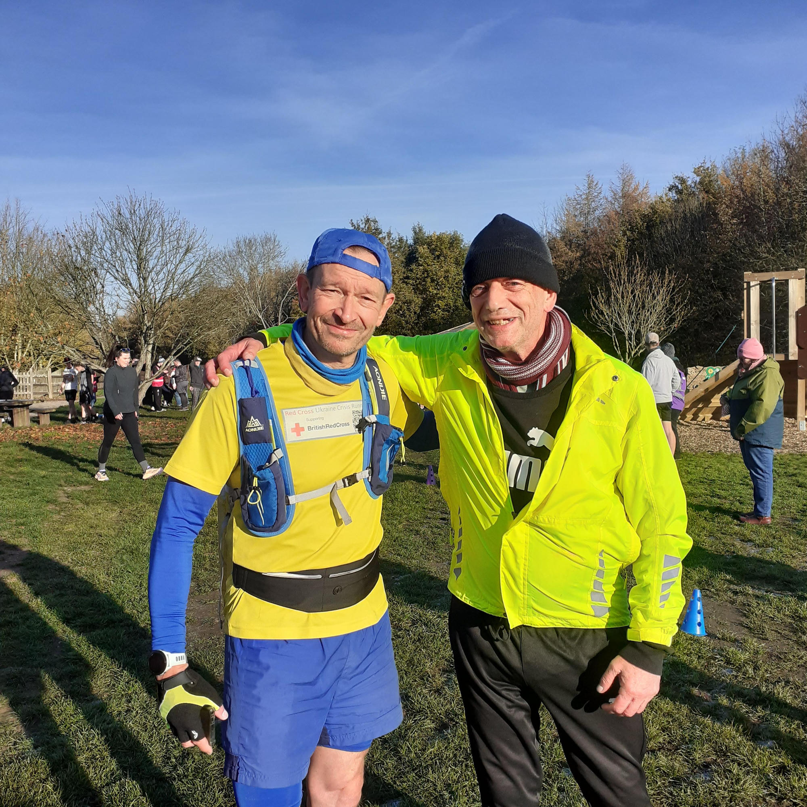

What do you do on a Saturday? I do Parkrun. Last week at the Rosliston parkrun, in the heart of the National Forest.
The weather was gloriously autumnal — cold and frosty with blue skies and sunshine — and Rosliston looked beautiful. The first timers briefing was delivered by Brian to a large group of us. 60 people were attending for the first time (26% of the participants), including some for whom this was their very first parkrun ever.
“What a lovely corner of God's Creation! We hope that you enjoyed it and will be back soon.” — Linda Curley
Rosliston Forestry Centre is a partnership site in The National Forest, on the border of Derbyshire and Staffordshire. Forestry England owns and manages 144 acres — most of the woodland — and South Derbyshire District Council owns the remaining 10 acres and manages the Visitor Centre and the site for visitors.
The partnership and its shared aims have lasted almost 30 years. Its story began with the planting of 120,000 trees between 1993 and 1997, creating young woodland intertwined with the existing trees in the hedgerows and in Fox Covert. Rosliston is a living forest just waiting to be explored. — Rosliston Forestry Centre, About Us
Trees lock up carbon, reduce pollution and flooding, and support people, wildlife and farming in adapting to the climate crisis. — Woodland Trust: The role of trees in the fight against climate change
My selfie is with Pierre, who is raising funds for the British Red Cross working in Ukraine. Find out more about the fundraiser.
